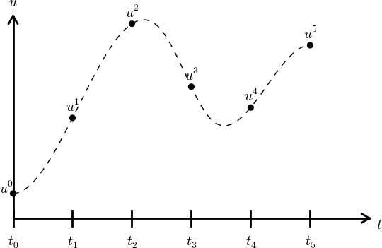
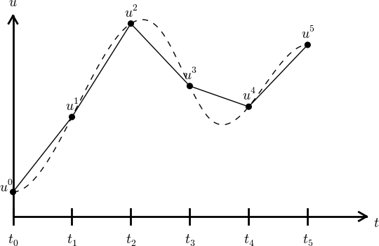

Finite difference methods
A basic model for exponential decay
Our model problem is perhaps the simplest ordinary differential equation (ODE): $$ \begin{equation*} u^{\prime}(t) = -au(t)\tp \end{equation*} $$ Here, \( u(t) \) is a scalar function of time \( t \), \( a \) is a constant, and \( u^{\prime}(t) \) means differentiation with respect to \( t \). This type of equation arises in a number of widely different phenomena where some quantity \( u \) undergoes exponential reduction. Examples include radioactive decay, population decay, investment decay, cooling of an object, pressure decay in the atmosphere, and retarded motion in fluids (for some of these models, \( a \) can be negative as well), see the section Applications of exponential decay models for details and motivation. We have chosen this particular ODE not only because its applications are relevant, but even more because studying numerical solution methods for this particular ODE gives important insight that can be reused in far more complicated settings, in particular when solving diffusion-type partial differential equations.
The exact solution
Although our interest is in approximate numerical solutions of \( u^{\prime}=-au \), it is convenient to know the exact analytical solution of the problem so we can compute the error in numerical approximation. The analytical solution of this ODE is found by separation of variables, which results in $$ \begin{equation*} u(t) = Ce^{-at},\end{equation*} $$ for any arbitrary constant \( C \). To obtain a unique solution, we need a condition to fix the value of \( C \). This condition is known as the initial condition and stated as \( u(0)=I \). That is, we know that the value of \( u \) is \( I \) when the process starts at \( t=0 \). With this knowledge, the exact solution becomes \( u(t)=Ie^{-at} \). The initial condition is also crucial for numerical methods: without it, we can never start the numerical algorithms!
Complete problem formulation
The ODE needs an initial condition, and we must also specify a time interval for the solution: \( t\in (0,T] \). The point \( t=0 \) is not included since we know that \( u(0)=I \) and assume that the equation governs \( u \) for \( t>0 \). Let us now summarize the information that is required to state the complete problem formulation: find \( u(t) \) such that $$ \begin{equation} u^{\prime} = -au,\ t\in (0,T], \quad u(0)=I\tp \tag{1} \end{equation} $$ This is known as a continuous problem because the parameter \( t \) varies continuously from \( 0 \) to \( T \). For each \( t \) we have a corresponding \( u(t) \). There are hence infinitely many values of \( t \) and \( u(t) \). The purpose of a numerical method is to formulate a corresponding discrete problem whose solution is characterized by a finite number of values, which can be computed in a finite number of steps on a computer. Typically, we choose a finite set of time values \( t_0,t_1,\ldots,t_{N_t} \), and create algorithms that generate the corresponding \( u \) values \( u_0,u_1,\ldots,u_{N_t} \).
The Forward Euler scheme
Solving an ODE like (1) by a finite difference method consists of the following four steps:
- discretizing the domain,
- requiring fulfillment of the equation at discrete time points,
- replacing derivatives by finite differences,
- formulating a recursive algorithm.
Step 1: Discretizing the domain
The time domain \( [0,T] \) is represented by a finite number of \( N_t+1 \) points $$ \begin{equation} 0 = t_0 < t_1 < t_2 < \cdots < t_{N_t-1} < t_{N_t} = T\tp \end{equation} $$ The collection of points \( t_0,t_1,\ldots,t_{N_t} \) constitutes a mesh or grid. Often the mesh points will be uniformly spaced in the domain \( [0,T] \), which means that the spacing \( t_{n+1}-t_n \) is the same for all \( n \). This spacing is often denoted by \( \Delta t \), which means that \( t_n=n\Delta t \).
We want the solution \( u \) at the mesh points: \( u(t_n) \), \( n=0,1,\ldots,N_t \). A notational short-form for \( u(t_n) \), which will be used extensively, is \( u^{n} \). More precisely, we let \( u^n \) be the numerical approximation to the exact solution \( u(t_n) \) at \( t=t_n \).
When we need to clearly distinguish between the numerical and exact solution, we often place a subscript e on the exact solution, as in \( \uex(t_n) \). Figure 1 shows the \( t_n \) and \( u^n \) points for \( n=0,1,\ldots,N_t=7 \) as well as \( \uex(t) \) as the dashed line.
Figure 1: Time mesh with discrete solution values at points and a dashed line indicating the true solution.

We say that the numerical approximation, i.e., the collection of \( u^n \) values for \( n=0,\ldots,N_t \), constitutes a mesh function. A "normal" continuous function is a curve defined for all real \( t \) values in \( [0,T] \), but a mesh function is only defined at discrete points in time. If you want to compute the mesh function between the mesh points, where it is not defined, an interpolation method must be used. Usually, linear interpolation, i.e., drawing a straight line between the mesh function values, see Figure 1, suffices. To compute the solution for some \( t\in [t_n, t_{n+1}] \), we use the linear interpolation formula $$ \begin{equation} u(t) \approx u^n + \frac{u^{n+1}-u^n}{t_{n+1}-t_n}(t - t_n)\tp \end{equation} $$
Figure 2: Linear interpolation between the discrete solution values (dashed curve is exact solution).

Step 2: Fulfilling the equation at discrete time points
The ODE is supposed to hold for all \( t\in (0,T] \), i.e., at an infinite number of points. Now we relax that requirement and require that the ODE is fulfilled at a finite set of discrete points in time. The mesh points \( t_0,t_1,\ldots,t_{N_t} \) are a natural (but not the only) choice of points. The original ODE is then reduced to the following equations: $$ \begin{equation} u^{\prime}(t_n) = -au(t_n),\quad n=0,\ldots,N_t,\quad u(0)=I\tp \tag{2} \end{equation} $$ Even though the original ODE is not stated to be valid at \( t=0 \), it is valid as close to \( t=0 \) as we like, and it turns out that it is useful for construction of numerical methods to have (2) valid for \( n=0 \). The next two steps show that we need (2) for \( n=0 \).
Step 3: Replacing derivatives by finite differences
The next and most essential step of the method is to replace the derivative \( u^{\prime} \) by a finite difference approximation. Let us first try a forward difference approximation (see Figure 3), $$ \begin{equation} u^{\prime}(t_n) \approx \frac{u^{n+1}-u^{n}}{t_{n+1}-t_n}\tp \tag{3} \end{equation} $$ The name forward relates to the fact that we use a value forward in time, \( u^{n+1} \), together with the value \( u^n \) at the point \( t_n \), where we seek the derivative, to approximate \( u^{\prime}(t_n) \). Inserting this approximation in (2) results in $$ \begin{equation} \frac{u^{n+1}-u^{n}}{t_{n+1}-t_n} = -au^{n},\quad n=0,1,\ldots,N_t-1\tp \tag{4} \end{equation} $$ Note that if we want to compute the solution up to time level \( N_t \), we only need (2) to hold for \( n=0,\ldots,N_t-1 \) since (4) for \( n=N_t-1 \) creates an equation for the final value \( u^{N_t} \).
Also note that we use the approximation symbol \( \approx \) in (3), but not in (4). Instead, we view (4) as an equation that is not mathematically equivalent to (3), but represents an approximation to the equation (3).
Equation (4) is the discrete counterpart to the original ODE problem (1), and often referred to as a finite difference scheme or more generally as the discrete equations of the problem. The fundamental feature of these equations is that they are algebraic and can hence be straightforwardly solved to produce the mesh function, i.e., the approximate values of \( u \) at the mesh points: \( u^n \), \( n=1,2,\ldots,N_t \).
Figure 3: Illustration of a forward difference.

Step 4: Formulating a recursive algorithm
The final step is to identify the computational algorithm to be implemented in a program. The key observation here is to realize that (4) can be used to compute \( u^{n+1} \) if \( u^n \) is known. Starting with \( n=0 \), \( u^0 \) is known since \( u^0=u(0)=I \), and (4) gives an equation for \( u^1 \). Knowing \( u^1 \), \( u^2 \) can be found from (4). In general, \( u^n \) in (4) can be assumed known, and then we can easily solve for the unknown \( u^{n+1} \): $$ \begin{equation} u^{n+1} = u^n - a(t_{n+1} -t_n)u^n\tp \tag{5} \end{equation} $$ We shall refer to (5) as the Forward Euler (FE) scheme for our model problem. From a mathematical point of view, equations of the form (5) are known as difference equations since they express how differences in the dependent variable, here \( u \), evolve with \( n \). In our case, the differences in \( u \) are given by \( u^{n+1}-u^n = -a(t_{n+1}-t_n)u^n \). The finite difference method can be viewed as a method for turning a differential equation into an algebraic difference equation that can be easily solved by repeated use of a formula like (5).
Interpretation
There is a very intuitive interpretation of the FE scheme, illustrated in the sketch below. We have computed some point values on the solution curve (small red disks), and the question is how we reason about the next point. Since we know \( u \) and \( t \) at the most recently computed point, the differential equation gives us the slope of the solution curve: \( u'=-au \). We can draw this slope as a red line and continue the solution curve along that slope. As soon as we have chosen the next point on this line, we have a new \( t \) and \( u \) value and compute a new slope and continue the process.

Computing with the recursive formula
Mathematical computation with (5) is straightforward: $$ \begin{align*} u_0 &= I,\\ u_1 & = u^0 - a(t_{1} -t_0)u^0 = I(1-a(t_1-t_0)),\\ u_2 & = u^1 - a(t_{2} -t_1)u^1 = I(1-a(t_1-t_0))(1 - a(t_2-t_1)),\\ u^3 &= u^2 - a(t_{3} -t_2)u^2 = I(1-a(t_1-t_0))(1 - a(t_2-t_1))(1 - a(t_3-t_2)), \end{align*} $$ and so on until we reach \( u^{N_t} \). Very often, \( t_{n+1}-t_n \) is constant for all \( n \), so we can introduce the common symbol \( \Delta t = t_{n+1}-t_n \), \( n=0,1,\ldots,N_t-1 \). Using a constant mesh spacing \( \Delta t \) in the above calculations gives $$ \begin{align*} u_0 &= I,\\ u_1 & = I(1-a\Delta t),\\ u_2 & = I(1-a\Delta t)^2,\\ u^3 &= I(1-a\Delta t)^3,\\ &\vdots\\ u^{N_t} &= I(1-a\Delta t)^{N_t}\tp \end{align*} $$ This means that we have found a closed formula for \( u^n \), and there is no need to let a computer generate the sequence \( u^1, u^2, u^3, \ldots \). However, finding such a formula for \( u^n \) is possible only for a few very simple problems, so in general finite difference equations must be solved on a computer.
As the next sections will show, the scheme (5) is just one out of many alternative finite difference (and other) methods for the model problem (1).
The Backward Euler scheme
There are several choices of difference approximations in step 3 of the finite difference method as presented in the previous section. Another alternative is $$ \begin{equation} u^{\prime}(t_n) \approx \frac{u^{n}-u^{n-1}}{t_{n}-t_{n-1}}\tp \tag{6} \end{equation} $$ Since this difference is based on going backward in time (\( t_{n-1} \)) for information, it is known as a backward difference, also called Backward Euler difference. Figure 4 explains the idea.
Figure 4: Illustration of a backward difference.

Inserting (6) in (2) yields the Backward Euler (BE) scheme: $$ \begin{equation} \frac{u^{n}-u^{n-1}}{t_{n}-t_{n-1}} = -a u^n,\quad n=1,\ldots,N_t\tp \tag{7} \end{equation} $$ We assume, as explained under step 4 in the section The Forward Euler scheme, that we have computed \( u^0, u^1, \ldots, u^{n-1} \) such that (7) can be used to compute \( u^n \). Note that (7) needs \( n \) to start at 1 (then it involves \( u^0 \), but no \( u^{-1} \)) and end at \( N_t \).
For direct similarity with the formula for the Forward Euler scheme (5) we replace \( n \) by \( n+1 \) in (7) and solve for the unknown value \( u^{n+1} \): $$ \begin{equation} u^{n+1} = \frac{1}{1+ a(t_{n+1}-t_n)} u^n,\quad n=0,\ldots,N_t-1\tp \tag{8} \end{equation} $$
The Crank-Nicolson scheme
The finite difference approximations (3) and (6) used to derive the schemes (5) and (8), respectively, are both one-sided differences, i.e., we collect information either forward or backward in time when approximating the derivative at a point. Such one-sided differences are known to be less accurate than central (or midpoint) differences, where we use information both forward and backward in time. A natural next step is therefore to construct a central difference approximation that will yield a more accurate numerical solution.
The central difference approximation to the derivative is sought at the point \( t_{n+\half}=\half (t_n + t_{n+1}) \) (or \( t_{n+\half}=(n+\half)\Delta t \) if the mesh spacing is uniform in time). The approximation reads $$ \begin{equation} u^{\prime}(t_{n+\half}) \approx \frac{u^{n+1}-u^n}{t_{n+1}-t_n}\tp \tag{9} \end{equation} $$ Figure 5 sketches the geometric interpretation of such a centered difference. Note that the fraction on the right-hand side is the same as for the Forward Euler approximation (3) and the Backward Euler approximation (6) (with \( n \) replaced by \( n+1 \)). The accuracy of this fraction as an approximation to the derivative of \( u \) depends on where we seek the derivative: in the center of the interval \( [t_{n},t_{n+1}] \) or at the end points. We shall later see that it is more accurate at the center point.
Figure 5: Illustration of a centered difference.

With the formula (9), where \( u^{\prime} \) is evaluated at \( t_{n+\half} \), it is natural to demand the ODE to be fulfilled at the time points between the mesh points: $$ \begin{equation} u^{\prime}(t_{n+\half}) = -au(t_{n+\half}),\quad n=0, \ldots,N_t-1\tp \tag{10} \end{equation} $$ Using (9) in (10) results in the approximate discrete equation $$ \begin{equation} \frac{u^{n+1}-u^n}{t_{n+1}-t_n} = -au^{n+\half},\quad n=0,\ldots,N_t-1, \tag{11} \end{equation} $$ where \( u^{n+\half} \) is a short form for the numerical approximation to \( u(t_{n+\half}) \).
There is a fundamental problem with the right-hand side of (11): we aim to compute \( u^n \) for integer \( n \), which means that \( u^{n+\half} \) is not a quantity computed by our method. The quantity must therefore be expressed by the quantities that we actually produce, i.e., the numerical solution at the mesh points. One possibility is to approximate \( u^{n+\half} \) as an arithmetic mean of the \( u \) values at the neighboring mesh points: $$ \begin{equation} u^{n+\half} \approx \half (u^n + u^{n+1})\tp \tag{12} \end{equation} $$ Using (12) in (11) results in a new approximate discrete equation $$ \begin{equation} \frac{u^{n+1}-u^n}{t_{n+1}-t_n} = -a\half (u^n + u^{n+1})\tp \tag{13} \end{equation} $$ There are three approximation steps leading to this formula: 1) the ODE is only valid at discrete points (between the mesh points), 2) the derivative is approximated by a finite difference, and 3) the value of \( u \) between mesh points is approximated by an arithmetic mean value. Despite one more approximation than for the Backward and Forward Euler schemes, the use of a centered difference leads to a more accurate method.
To formulate a recursive algorithm, we assume that \( u^n \) is already computed so that \( u^{n+1} \) is the unknown, which we can solve for: $$ \begin{equation} u^{n+1} = \frac{1-\half a(t_{n+1}-t_n)}{1 + \half a(t_{n+1}-t_n)}u^n\tp \tag{14} \end{equation} $$ The finite difference scheme (14) is often called the Crank-Nicolson (CN) scheme or a midpoint or centered scheme. Note that (14) as well as (5) and (8) apply whether the spacing in the time mesh, \( t_{n+1}-t_n \), depends on \( n \) or is constant.
The unifying \( \theta \)-rule
The Forward Euler, Backward Euler, and Crank-Nicolson schemes can be formulated as one scheme with a varying parameter \( \theta \): $$ \begin{equation} \frac{u^{n+1}-u^{n}}{t_{n+1}-t_n} = -a (\theta u^{n+1} + (1-\theta) u^{n}) \tag{15} \tp \end{equation} $$
Observe:
- \( \theta =0 \) gives the Forward Euler scheme
- \( \theta =1 \) gives the Backward Euler scheme, and
- \( \theta =\half \) gives the Crank-Nicolson scheme.
As before, \( u^n \) is considered known and \( u^{n+1} \) unknown, so we solve for the latter: $$ \begin{equation} u^{n+1} = \frac{1 - (1-\theta) a(t_{n+1}-t_n)}{1 + \theta a(t_{n+1}-t_n)}\tp \tag{16} \end{equation} $$ This scheme is known as the \( \theta \)-rule, or alternatively written as the "theta-rule".
Let now the ODE hold at the point \( \tilde t\in [t_n,t_{n+1}] \), approximate \( u^{\prime} \) by the fraction \( (u^{n+1}-u^{n})/(t_{n+1}-t_n) \), and approximate the right-hand side \( -au \) by the weighted average (17). The result is (15).
Constant time step
All schemes up to now have been formulated for a general non-uniform mesh in time: \( t_0 < t_1 < \cdots < t_{N_t} \). Non-uniform meshes are highly relevant since one can use many points in regions where \( u \) varies rapidly, and fewer points in regions where \( u \) is slowly varying. This idea saves the total number of points and therefore makes it faster to compute the mesh function \( u^n \). Non-uniform meshes are used together with adaptive methods that are able to adjust the time mesh during the computations (the section Example: Adaptive Runge-Kutta methods applies adaptive methods).
However, a uniformly distributed set of mesh points is not only convenient, but also sufficient for many applications. Therefore, it is a very common choice. We shall present the finite difference schemes for a uniform point distribution \( t_n=n\Delta t \), where \( \Delta t \) is the constant spacing between the mesh points, also referred to as the time step. The resulting formulas look simpler and are more well known.
It is not accidental that we focus on presenting the Forward Euler, Backward Euler, and Crank-Nicolson schemes. They complement each other with their different pros and cons, thus providing a useful collection of solution methods for many differential equation problems. The unifying notation of the \( \theta \)-rule makes it convenient to work with all three methods through just one formula.
Mathematical derivation of finite difference formulas
The finite difference formulas for approximating the first derivative of a function have so far been somewhat justified through graphical illustrations in Figures 3, 4, and 5. The task is to approximate the derivative at a point of a curve using only two function values. By drawing a straight line through the points, we have some approximation to the tangent of the curve and use the slope of this line as an approximation to the derivative. The slope can be computed by inspecting the figures.
However, we can alternatively derive the finite difference formulas by pure mathematics. The key tool for this approach is Taylor series, or more precisely, approximation of functions by lower-order Taylor polynomials. Given a function \( f(x) \) that is sufficiently smooth (i.e., \( f(x) \) has "enough derivatives"), a Taylor polynomial of degree \( m \) can be used to approximate the value of the function \( f(x) \) if we know the values of \( f \) and its first \( m \) derivatives at some other point \( x=a \). The formula for the Taylor polynomial reads $$ \begin{align} f(x) & \approx f(a) + f'(a)(x-a) + \frac{1}{2}f''(a)(x-a)^2 + \frac{1}{6}f'''(a)(x-a)^3 + \cdots \nonumber\\ &\quad + \frac{1}{m!}\frac{df^{(m)}}{dx^m}(a)(x-a)^m\tp \end{align} $$ For a function of time, \( f(t) \), related to a mesh with spacing \( \Delta t \), we often need the Taylor polynomial approximation at \( f(t_n\pm\Delta t) \) given \( f \) and its derivatives at \( t=t_n \). Replacing \( x \) by \( t_n+\Delta t \) and \( a \) by \( t_n \) gives $$ \begin{align} f(t_n+\Delta t) & \approx f(t_n) + f'(t_n)\Delta t + \frac{1}{2}f''(t_n) \Delta t^2 + \frac{1}{6}f'''(t_n)\Delta t^3 + \cdots\nonumber\\ &\quad + \frac{1}{m!}\frac{df^{(m)}}{dx^m}(t_n)\Delta t^m\tp \tag{23} \end{align} $$
The forward difference
We can use (23) to find an approximation for \( f'(t_n) \) simply by solving with respect to this quantity: $$ \begin{align} f'(t_n) & \approx \frac{f(t_n+\Delta t) - f(t_n)}{\Delta t} - \frac{1}{2}f''(t_n)\Delta t - \frac{1}{6}f'''(t_n)\Delta t^2 + \cdots\nonumber\\ &\quad - \frac{1}{m!}\frac{df^{(m)}}{dx^m}(t_n)\Delta t^{m-1}\tp \tag{24} \end{align} $$ By letting \( m\rightarrow\infty \), this formula is exact, but that is not so much of practical value. A more interesting observation is that all the power terms in \( \Delta t \) vanish as \( \Delta t\rightarrow 0 \), i.e., the formula $$ \begin{equation} f'(t_n) \approx \frac{f(t_n+\Delta t) - f(t_n)}{\Delta t} \tag{25} \end{equation} $$ is exact in the limit \( \Delta t\rightarrow 0 \).
The interesting feature of (24) is that we have a measure of the error in the formula (25): the error is given by the extra terms on the right-hand side of (24). We assume that \( \Delta t \) is a small quantity (\( \Delta t\ll 1 \)). Then \( \Delta t^2\ll\Delta t \), \( \Delta t^3\ll \Delta t^2 \), and so on, which means that the first term is the dominating term. This first term reads \( -\frac{1}{2}f''(t_n)\Delta t \) and can be taken as a measure of the error in the Forward Euler formula.
The backward difference
To derive the backward difference, we use the Taylor polynomial approximation at \( f(t_n-\Delta t) \): $$ \begin{align} f(t_n-\Delta t) &\approx f(t_n) - f'(t_n)\Delta t + \frac{1}{2}f''(t_n) \Delta t^2 - \frac{1}{6}f'''(t_n)\Delta t^3+ \cdots\nonumber\\ &\quad + \frac{1}{m!}\frac{df^{(m)}}{dx^m}(t_n)\Delta t^m\tp \tag{26} \end{align} $$ Solving with respect to \( f'(t_n) \) gives $$ \begin{align} f'(t_n) &\approx \frac{f(t_n) - f(t_n-\Delta t)}{\Delta t} + \frac{1}{2}f''(t_n)\Delta t - \frac{1}{6}f'''(t_n)\Delta t^2+ \cdots\nonumber\\ &\quad - \frac{1}{m!}\frac{df^{(m)}}{dx^m}(t_n)\Delta t^{m-1}\tp \tag{27} \end{align} $$ The term \( \frac{1}{2}f''(t_n)\Delta t \) can be taken as a simple measure of the approximation error since it will dominate over the other terms as \( \Delta t\rightarrow 0 \).
The centered difference
The centered difference approximates the derivative at \( t_n+\frac{1}{2}\Delta t \). Let us write up the Taylor polynomial approximations to \( f(t_n) \) and \( f(t_{n+1}) \) around \( t_n+\frac{1}{2}\Delta t \): $$ \begin{align} f(t_n) &\approx f(t_n+\frac{1}{2}\Delta t) - f'(t_n+\frac{1}{2}\Delta t)\frac{1}{2}\Delta t + f''(t_n+\frac{1}{2}\Delta t)(\frac{1}{2}\Delta t)^2 -\nonumber\\ & \quad f'''(t_n+\frac{1}{2}\Delta t)(\frac{1}{2}\Delta t)^3 + \cdots\\ f(t_{n+1}) & \approx f(t_n+\frac{1}{2}\Delta t) + f'(t_n+\frac{1}{2}\Delta t)\frac{1}{2}\Delta t + f''(t_n+\frac{1}{2}\Delta t)(\frac{1}{2}\Delta t)^2 +\nonumber\\ &\quad f'''(t_n+\frac{1}{2}\Delta t)(\frac{1}{2}\Delta t)^3 + \cdots \end{align} $$ Subtracting the first from the second gives $$ \begin{equation} f(t_{n+1}) - f(t_n) = f'(t_n+\frac{1}{2}\Delta t)\Delta t + 2f'''(t_n+\frac{1}{2}\Delta t)(\frac{1}{2}\Delta t)^3 + \cdots \tag{28} \end{equation} $$ Solving with respect to \( f'(t_n+\frac{1}{2}\Delta t) \) results in $$ \begin{equation} f'(t_n+\frac{1}{2}\Delta t) \approx \frac{f(t_{n+1}) - f(t_n)}{\Delta t} - \frac{1}{4}f'''(t_n+\frac{1}{2}\Delta t)\Delta t^2 + c \cdots \tag{29} \end{equation} $$ This time the error measure goes like \( \frac{1}{4}f'''\Delta t^2 \), i.e., it is proportional to \( \Delta t^2 \) and not only \( \Delta t \), which means that the error goes faster to zero as \( \Delta t \) is reduced. This means that the centered difference formula $$ \begin{equation} f'(t_n+\frac{1}{2}\Delta t) \approx \frac{f(t_{n+1}) - f(t_n)}{\Delta t} \tag{30} \end{equation} $$ is more accurate than the forward and backward differences for small \( \Delta t \).
Compact operator notation for finite differences
Finite difference formulas can be tedious to write and read, especially for differential equations with many terms and many derivatives. To save space and help the reader spot the nature of the difference approximations, we introduce a compact notation. For a function \( u(t) \), a forward difference approximation is denoted by the \( D_t^+ \) operator and written as $$ \begin{equation} [D_t^+u]^n = \frac{u^{n+1} - u^{n}}{\Delta t} \ \left( \approx \frac{d}{dt} u(t_n)\right) \tag{31} \tp \end{equation} $$ The notation consists of an operator that approximates differentiation with respect to an independent variable, here \( t \). The operator is built of the symbol \( D \), with the independent variable as subscript and a superscript denoting the type of difference. The superscript \( \,{}^+ \) indicates a forward difference. We place square brackets around the operator and the function it operates on and specify the mesh point, where the operator is acting, by a superscript after the closing bracket.
The corresponding operator notation for a centered difference and a backward difference reads $$ \begin{equation} [D_tu]^n = \frac{u^{n+\half} - u^{n-\half}}{\Delta t} \approx \frac{d}{dt} u(t_n), \tag{32} \end{equation} $$ and $$ \begin{equation} [D_t^-u]^n = \frac{u^{n} - u^{n-1}}{\Delta t} \approx \frac{d}{dt} u(t_n) \tag{33} \tp \end{equation} $$ Note that the superscript \( \,{}^- \) denotes the backward difference, while no superscript implies a central difference.
An averaging operator is also convenient to have: $$ \begin{equation} [\overline{u}^{t}]^n = \half (u^{n-\half} + u^{n+\half} ) \approx u(t_n) \tag{34} \end{equation} $$ The superscript \( t \) indicates that the average is taken along the time coordinate. The common average \( (u^n + u^{n+1})/2 \) can now be expressed as \( [\overline{u}^{t}]^{n+\half} \). (When also spatial coordinates enter the problem, we need the explicit specification of the coordinate after the bar.)
With our compact notation, the Backward Euler finite difference approximation to \( u^{\prime}=-au \) can be written as $$ \begin{equation*} [D_t^-u]^n = -au^n \tp \end{equation*} $$ In difference equations we often place the square brackets around the whole equation, to indicate at which mesh point the equation applies, since each term must be approximated at the same point: $$ \begin{equation} [D_t^- u = -au]^n \tp \end{equation} $$ Similarly, the Forward Euler scheme takes the form $$ \begin{equation} [D_t^+ u = -au]^n, \end{equation} $$ while the Crank-Nicolson scheme is written as $$ \begin{equation} [D_t u = -a\overline{u}^t]^{n+\half}\tp \tag{35} \end{equation} $$
The \( \theta \)-rule can be specified in operator notation by $$ \begin{equation} [\bar D_t u = -a\overline{u}^{t,\theta}]^{n+\theta},\tp \tag{36} \end{equation} $$ We define a new time difference $$ \begin{equation} \lbrack\bar D_t u\rbrack^{n+\theta} = \frac{u^{n+1}-u^n}{t^{n+1}-t^n}, \tag{37} \end{equation} $$ to be applied at the time point \( t_{n+\theta}\approx\theta t_n + (1-\theta)t_{n+1} \). This weighted average gives rise to the weighted averaging operator $$ \begin{equation} \lbrack\overline{u}^{t,\theta}\rbrack^{n+\theta} = (1-\theta)u^{n} + \theta u^{n+1} \approx u(t_{n+\theta}), \tag{38} \end{equation} $$ where \( \theta\in [0,1] \) as usual. Note that for \( \theta =\half \) we recover the standard centered difference and the standard arithmetic mean. The idea in (36) is to sample the equation at \( t_{n+\theta} \), use a non-symmetric difference at that point \( [\bar D_t u]^{n+\theta} \), and a weighted (non-symmetric) mean value.
An alternative and perhaps clearer notation is $$ [D_t u]^{n+\half} = \theta [-au]^{n+1} + (1-\theta)[-au]^{n}\tp $$
Looking at the various examples above and comparing them with the underlying differential equations, we see immediately which difference approximations that have been used and at which point they apply. Therefore, the compact notation effectively communicates the reasoning behind turning a differential equation into a difference equation.